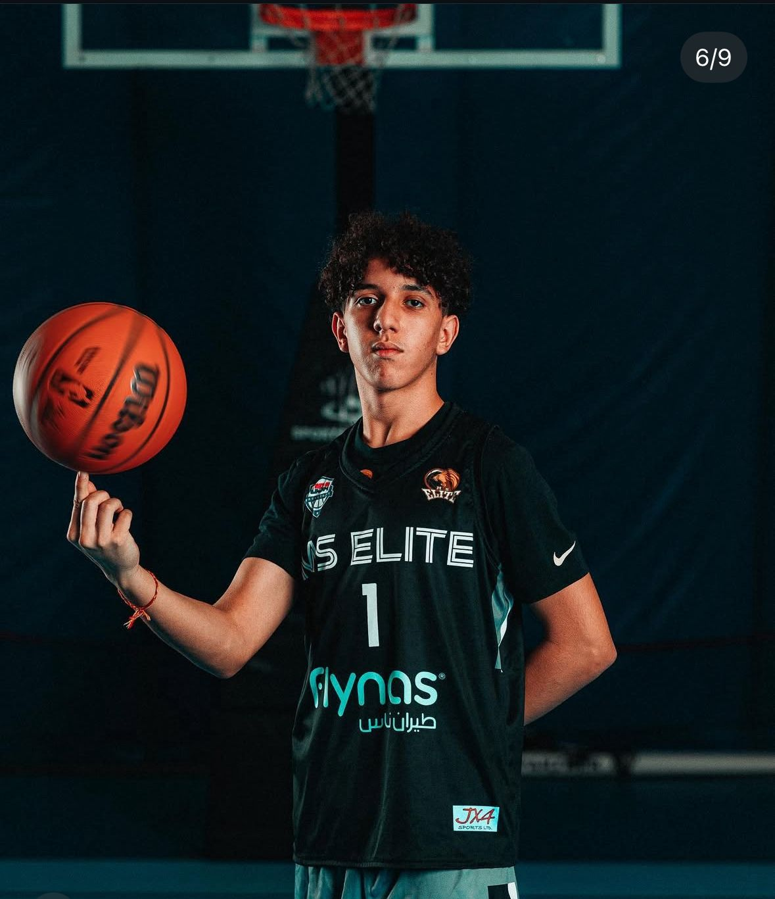
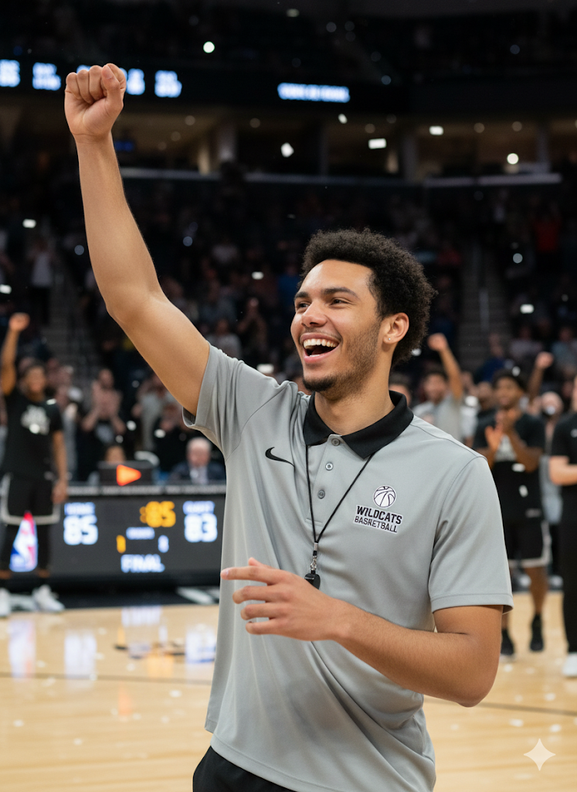

About HoopLab
HoopLab was built like a real performance lab: every program is based on data from actual players, not random “TikTok workouts”.
Before designing the vertical, speed and in-season plans, we ran a pilot study with guards and wings (U17–U22) and tracked:
- Vertical jump (CMJ & approach), 10–20 m sprint and lane agility test
- Session RPE (how hard each workout feels) and soreness
- Training load across weeks to avoid overuse and keep players fresh for games
The result: repeatable, progressive templates you can plug straight into your week, with clear priorities: jump higher, move faster, stay healthy.
Pilot Study Snapshot
Data used to shape volume, frequency and progression of each HoopLab program.
Coaching Staff
Evidence-based coaching
Coach Amnay Hamdad
Speed & Agility · Ball-handling
Builds acceleration, change of direction and on-court movement that actually translates to games.

Coach Noan Oberson
Strength · Plyometrics
Designs low-injury-risk jump and strength progressions with clear loading and deload weeks.